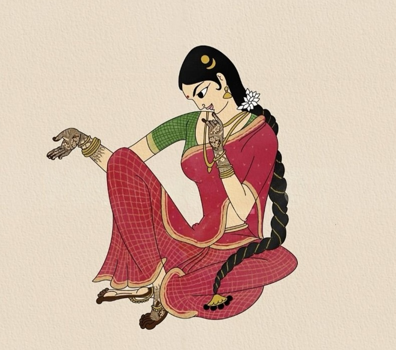
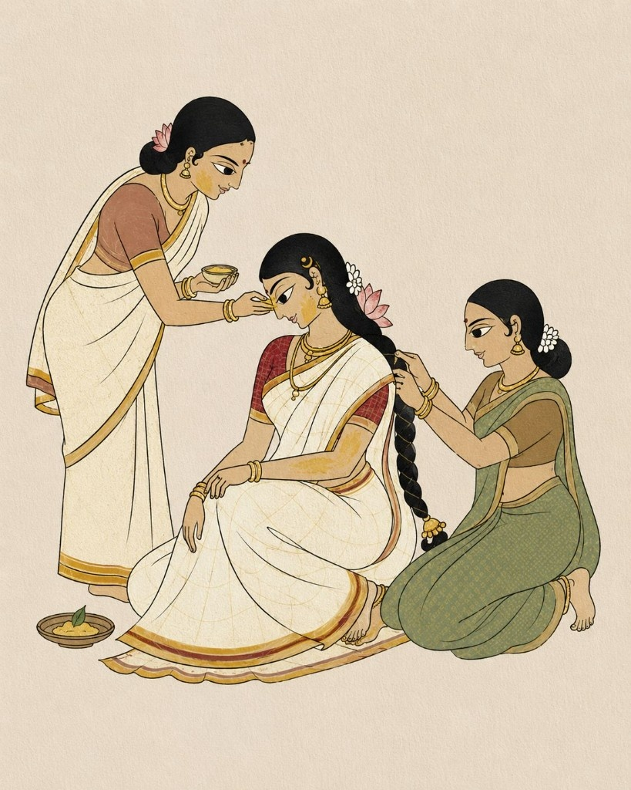
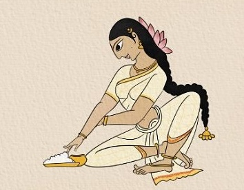
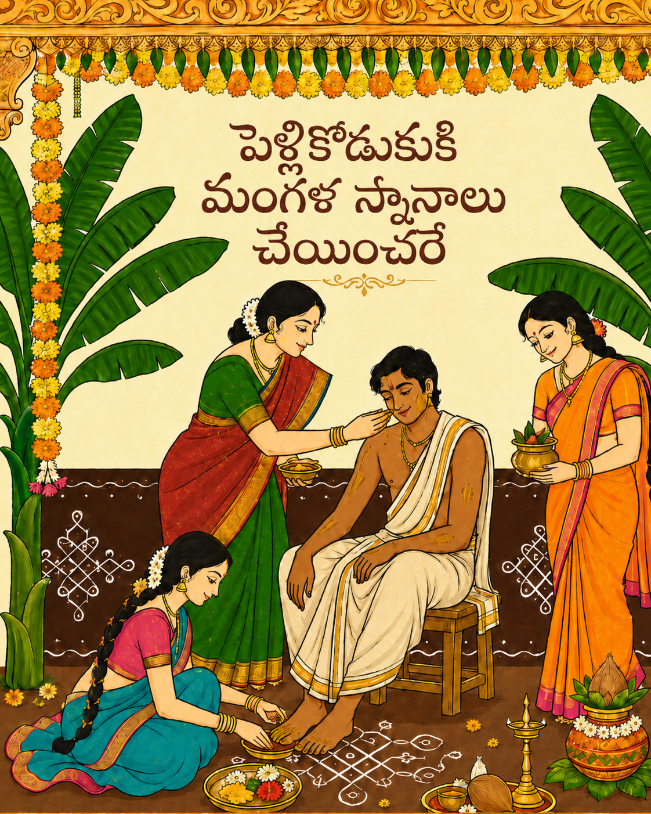
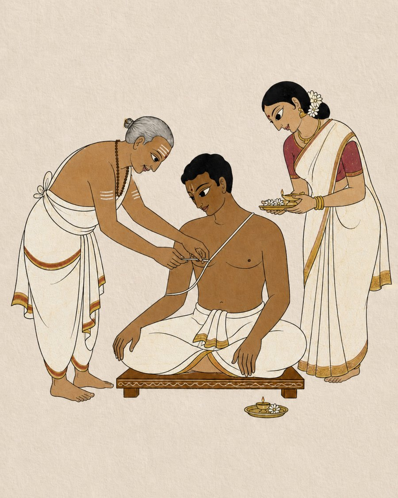
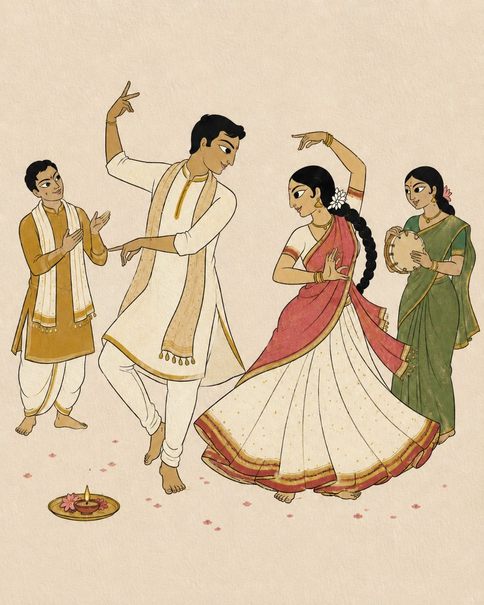
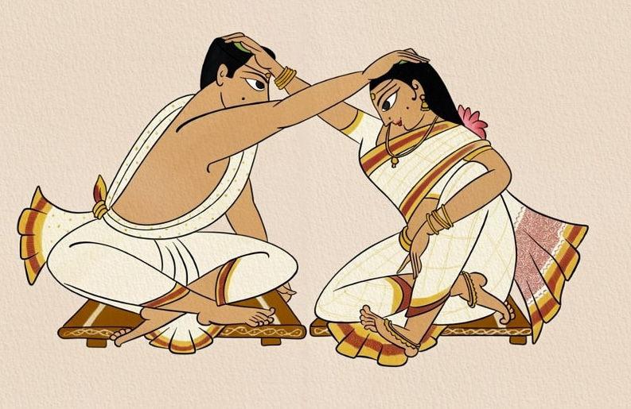
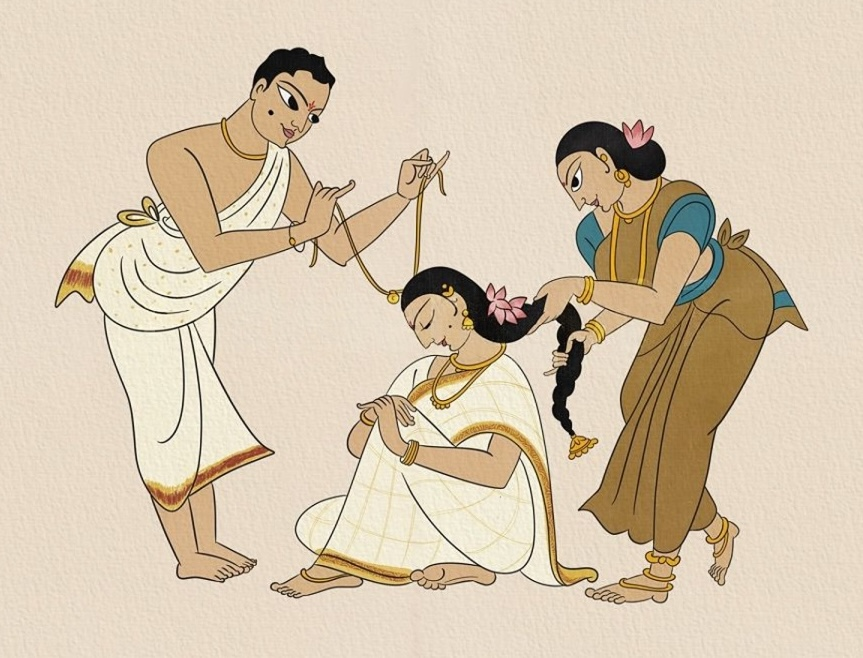
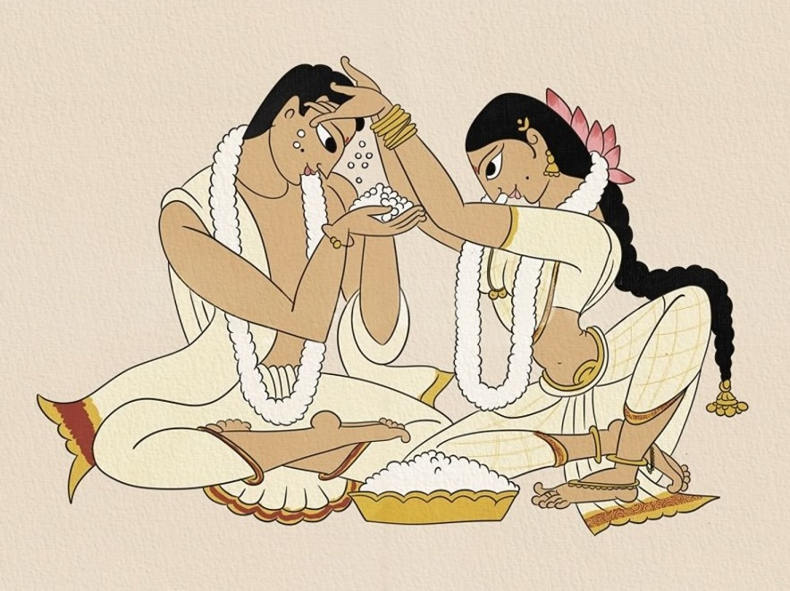
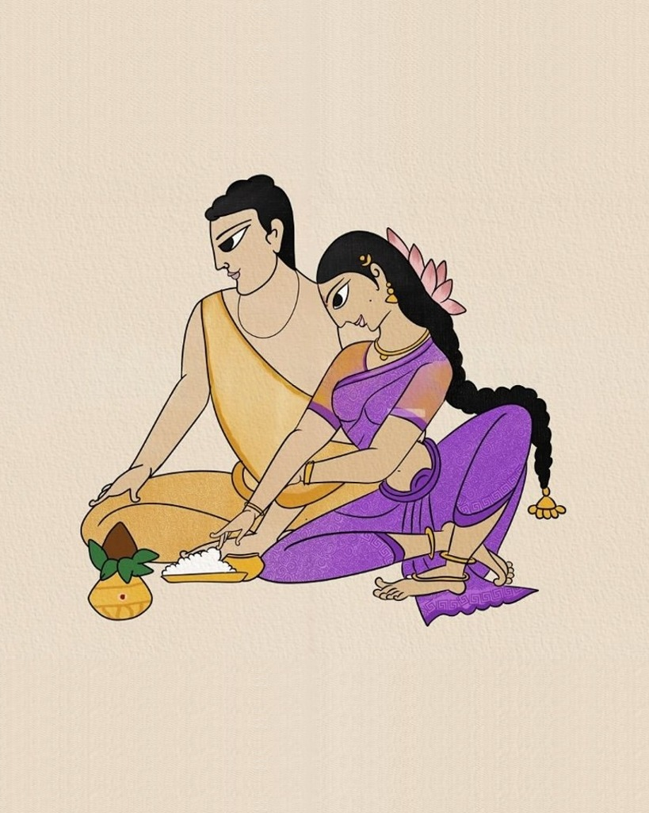

గోరింటాకు
Mehendi
A cheerful evening filled with henna, giggles, cousins, and songs, as intricate gorintaku blooms on the bride's hands and begins the celebrations on a beautiful note.
View on Mapవేడుకలు
Two families, many rituals, one beautiful beginning
A traditional Telugu wedding unfolds through cherished rituals, warm blessings, and joyous family celebrations. Here is a look at all the special moments leading us to our big day — some hers, some his, and some beautifully ours.
వధువు వేడుకలు

గోరింటాకు
A cheerful evening filled with henna, giggles, cousins, and songs, as intricate gorintaku blooms on the bride's hands and begins the celebrations on a beautiful note.
View on Map
పెళ్లికూతురు
Turmeric, fragrant oils, and the affectionate blessings of the women in the family wrap the bride in love as she is prepared for her next chapter.
View on Map
గౌరీ పూజ
On the wedding morning, the bride offers heartfelt prayers to Goddess Gowri, seeking strength, grace, and a blissful married life.
View on Mapవరుడు వేడుకలు

పెళ్లికొడుకు
The groom's side celebrates with rituals, blessings, and joyful preparations, getting Kartik ready for the biggest day of his life.
View on Map
ఉపనయనం
A sacred rite rooted in Vedic tradition, performed with devotion, prayers, and the blessings of elders and loved ones.
View on Map
సంగీత్
A lively evening of music, dance, teasing, cheering, and fully justified family overconfidence about their performance skills.
View on Mapవివాహ వేడుకలు
శుభ వివాహ మహోత్సవం · Traditional Telugu Wedding
లలనా & కార్తిక్
With the blessings of their beloved families, Lalana and Kartik request the pleasure of your presence as they begin their forever in the warmth of Telugu tradition.
Bride / వధువు
Beloved first-born and only daughter of Sri Siva Nageswara Rao and Smt. Surya Nagamani, and a cherished sister to her younger brother.
శ్రీ సివ నాగేశ్వరరావు గారు మరియు శ్రీమతి సూర్య నాగమణి గార్ల ప్రియమైన పెద్ద కుమార్తె, ఏకైక తనయ లలనా.
Groom / వరుడు
Dear and only son of Sri Prasad and Smt. Suguna, lovingly raised as the heart of his family.
శ్రీ ప్రసాద్ గారు మరియు శ్రీమతి సుగుణ గార్ల ఏకైక కుమారుడు కార్తిక్.

జీలకర్ర బెల్లం
The moment the couple places cumin and jaggery on each other's heads — symbolising two souls becoming inseparable.

మాంగల్యధారణం
The sacred tying of the mangalsutra, a timeless vow of togetherness witnessed by family, fire, and faith.

తాళంబ్రాలు
A playful shower of rice, blessings, and laughter — the ritual where love gets competitive in the cutest possible way.
From sacred vows to playful rituals, our wedding is a celebration of love, laughter, blessings, and two families becoming one.

సత్యనారాయణ వ్రతం
A traditional pooja performed by the newlyweds, seeking the blessings of Lord Satyanarayana for a prosperous, peaceful, and joyful married life.
విందు
An evening of celebration, smiles, photographs, dinner, and a lot of people asking, “So… how did you two meet?” — all while we celebrate this beautiful new beginning.
View on Map